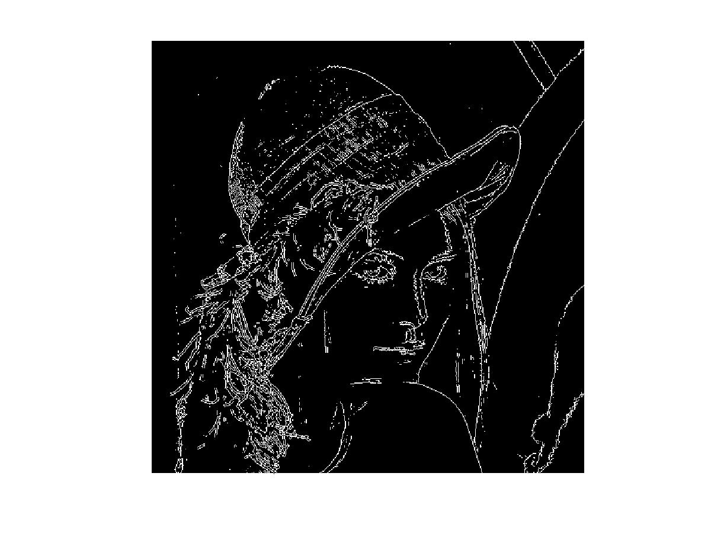
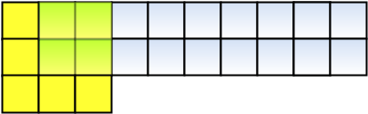
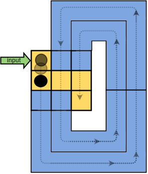
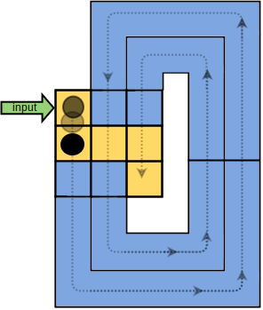

The Sobel operator is one of the most widely known methods for edge detection in image processing. The edges in an image are the points where the pixel intensity have the maximum variation in the spatial distribution. In the frequency domain, the edges are obtained filtering out the low frequencies in the spatial distribution [1].
To obtain the edges of an image I, a 2D convolution with two kernels of dimension 3x3 are calculated to obtain the gradients (Gx: frequency variations in horizontal direction and Gy: frequency variations in vertical direction) according to equation (1):
Equation (1){kind=link}
The resultant gradient with its direction is defined in equation (2):
Equation (2){kind=link}
A practical example
To understand the effect of the Solbel filter, we will use the Figure (1).
 Figure (1): The classic picture of Lena
Figure (1): The classic picture of Lena
Using MATLAB (or its open source version Octave with Image Processing package) we can do the Sobel Operation with the following lines of code:
//Figure (1): the classic picture of Lena img = imread("lena.bmp"); figure(1), imshow(img);
The first step for edge detection using Octave is to convert the image to gray scale. It can be achieved with the following lines of code:
//Figure (2): Lena's picture in gray scale pkg load image; img_gray = rgb2gray(img); figure(2), imshow(img_gray);
The Lena's picture in gray scale can be seen in Figure (2):
Figure (2): Lena's picture in gray scale{kind=link}
To detect the edges of the image using Octave just use this lines of code:
//Figure (3): Edges of the classic picture of Lena edge_img = edge(img_gray, "Sobel"); figure(3), imshow(edge_img)
The edges of the classic picture of Lena can be seen in Figure (3):
 Figure (3): Edges of the classic picture of Lena{kind=link}
Hardware implementation
An image is defined with a 2D matrix in which its elements represent the pixel intensity of its content. However, hardware devices such digital cameras transfer images in 1D stream of bits. So, to perform a kernel convolution of 3x3 dimension, the minimum amount of bits required is 2 lines of the the image, as can be seen in Figure (4), where 2 buffers of lenght 9 are being used for convolve a 3x3 kernel [2][3][4].
 Figure (4): Convolution of a 3x3 kernel with a image with WIDTH=9 pixels per line{kind=link}
The pixel's datapath in the convolution can ben seen in Figure (5) and it can be represented mathematically as a function of the BUFFER_SIZE acccording to equation (3), where the matrix SLIDING_WINDOW3x3(pixel(t)), represents the 3x3 kernel that convolves the pixels in function of the time t and as a function of BUFFER_SIZE.
 Equation (3)

Figure (5): The pixel's datapath in the convolution
Equation (3)

Figure (5): The pixel's datapath in the convolution
{kind=link}
The SystemVerilog code of the Sliding Window for the pixel streams can be seen below:
parameter WORD_SIZE = 8; parameter ROW_SIZE = 10; parameter BUFFER_SIZE = 3; module sliding_window #(parameter WORD_SIZE=8, BUFFER_SIZE=3) (input logic clock, reset, input logic [WORD_SIZE-1:0] inputPixel, output logic [BUFFER_SIZE-1:0][WORD_SIZE-1:0]sliding[BUFFER_SIZE-1:0]); logic [(BUFFER_SIZE-1)*WORD_SIZE-1:0] buffer[ROW_SIZE-1:0]; logic [$clog2(ROW_SIZE)-1:0] ptr; always_ff @(posedge clock) if(reset) begin ptr <=0; sliding[0][0] <= 0; sliding[0][1] <= 0; sliding[0][2] <= 0; sliding[1][0] <= 0; sliding[1][1] <= 0; sliding[1][2] <= 0; sliding[2][0] <= 0; sliding[2][1] <= 0; sliding[2][2] <= 0; end else begin sliding[0][0] <= inputPixel; sliding[1][0] <= sliding[0][0]; sliding[1][1] <= sliding[0][1]; sliding[1][2] <= sliding[0][2]; sliding[2][0] <= sliding[1][0]; sliding[2][1] <= sliding[1][1]; sliding[2][2] <= sliding[1][2]; buffer[ptr] <= sliding[BUFFER_SIZE-1][BUFFER_SIZE-2:0]; sliding[0][BUFFER_SIZE-1:1] <= buffer[ptr]; if(ptr < ROW_SIZE-BUFFER_SIZE) ptr <= ptr + 1; else ptr <= 0; end endmodule: sliding_window
The SystemVerilog code of the 3x3 kernel for Sobel Operation and its testbench can be seen below:
module sobel #(parameter WORD_SIZE=8) (input logic clock,reset, input logic [WORD_SIZE-1:0] inputPixel, output logic [WORD_SIZE-1:0] outputPixel); localparam BUFFER_SIZE=3; logic [BUFFER_SIZE-1:0] [WORD_SIZE-1:0] sliding [BUFFER_SIZE-1:0]; sliding_window #(WORD_SIZE,BUFFER_SIZE) my_window(.*); logic [WORD_SIZE+1:0] gx1, gx2, gy1, gy2; always_ff @(posedge clock) if (reset) begin gx1 <= 0; gx2 <= 0; gy1 <= 0; gy2 <= 0; end else begin gx1 <= sliding[0][0] + sliding[2][0] + (sliding[1][0]<<1); gx2 <= sliding[0][2] + sliding[2][2] + (sliding[1][2]<<1); gy1 <= sliding[0][0] + sliding[0][2] + (sliding[2][1]<<1); gy2 <= sliding[2][0] + sliding[2][2] + (sliding[0][1]<<1); end logic [WORD_SIZE+1:0] gx, gy; always_comb begin if (gx1 > gx2) gx <= gx1-gx2; else gx <= gx2 - gx1; if (gy1 > gy2) gy <= gy1-gy2; else gy <= gy2-gy1; end logic [WORD_SIZE+2:0] g; always_comb g <= gy+gx; always_ff @(posedge clock) if (reset) outputPixel <= 0; else if (g[WORD_SIZE+2]) outputPixel <= {WORD_SIZE{1'b1}}; else outputPixel <= g[WORD_SIZE+1:2]; endmodule
`include "sobel.sv" module top(); logic clock, reset; logic [4:0] i, k; logic [WORD_SIZE-1:0] inputPixel; logic [WORD_SIZE-1:0] outputPixel; initial begin $display("testing ..."); clock = 0; $monitor("%d %d %d", i, inputPixel, outputPixel); for(i=0; i<31; i++)begin #0 @(posedge clock) inputPixel=$random; end #100; $finish; end always #5 clock = !clock; sobel filter(.clock(clock), .reset(1'b0), .inputPixel(inputPixel), .outputPixel(outputPixel)); endmodule: top
Also available in GitHub.
References:
[1] http://homepages.inf.ed.ac.uk/rbf/HIPR2/sobel.htm
[2] Gradient Filter implementation on FPGA : Part 2 Implementing gradient Filter
[3] VIVADO HLS 2D Convolution on hardware - part 1
[4] LAD Projetos